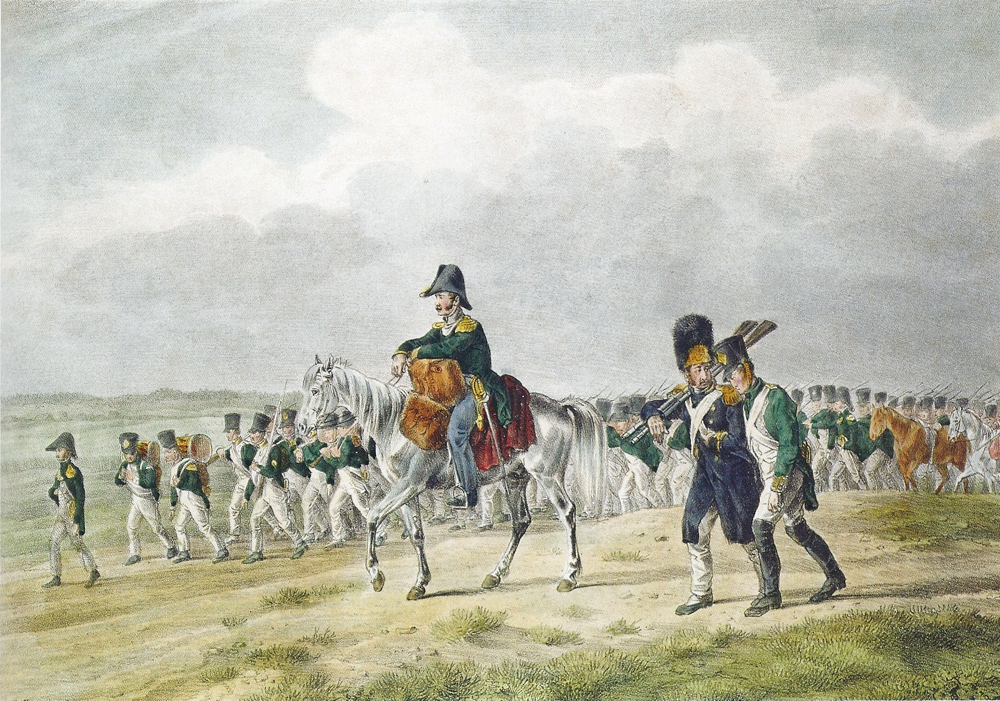
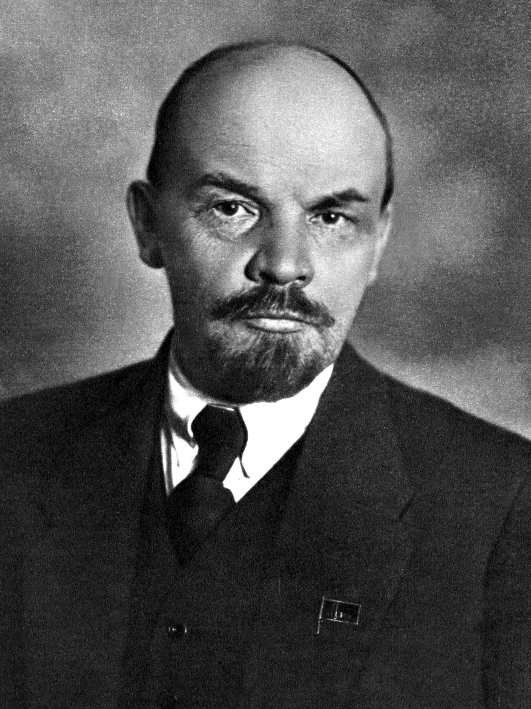
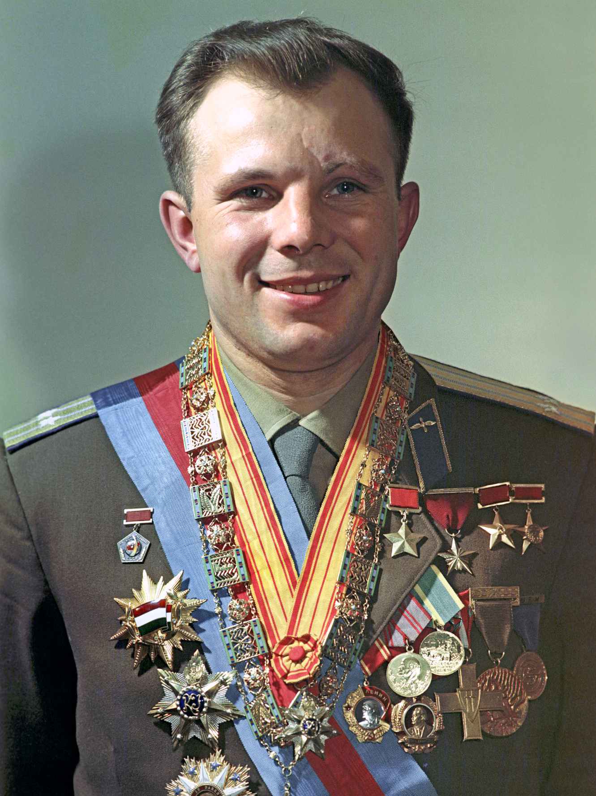

1. Ο Πατριωτικός Πόλεμος του 1812: Ο Ναπολέων στις Φλόγες της Μόσχας
Στο 18ο μάθημα της σειράς, η Μαρία Ευθυμίου αναλύει την πορεία της Ρωσίας στη διεθνή σκηνή κατά τον 19ο και 20ό αιώνα: από τη σύγκρουση με τη ναπολεόντεια Ευρώπη έως τη σεισμική κομμουνιστική επανάσταση και τη γέννηση της Σοβιετικής υπερδύναμης.
Το καλοκαίρι του 1812, ο Ναπολέων Βοναπάρτης εισέβαλε στη Ρωσία επικεφαλής της μεγαλύτερης στρατιάς που είχε δει μέχρι τότε ο κόσμος: της Μεγάλης Στρατιάς (Grande Armée). Επρόκειτο για έναν πολυεθνικό κολοσσό άνω των 600.000 ανδρών από είκοσι διαφορετικά έθνη της υποταγμένης Ευρώπης —Γάλλοι, Πολωνοί, Ιταλοί, Γερμανοί, Ελβετοί, Ολλανδοί— με 200.000 άλογα και πάνω από 1.000 κανόνια. Ο Ναπολέων υπολόγιζε σε έναν ταχύ κεραυνοβόλο πόλεμο λίγων εβδομάδων, προσδοκώντας μια αποφασιστική μάχη εκ παρατάξεως κοντά στα σύνορα που θα ανάγκαζε τον Τσάρο Αλέξανδρο Α΄ να υπογράψει συνθηκολόγηση.
Η Τακτική της «Καμένης Γης» & η Στρατηγική του Κουτούζοφ:
Αντί για μάχη, η Grande Armée συνάντησε το απέραντο, σιωπηλό κενό της ρωσικής στέπας. Ο ηλικιωμένος, μονόφθαλμος αρχιστράτηγος Μιχαήλ Κουτούζοφ εφάρμοσε μια ιδιοφυή αλλά αμείλικτη στρατηγική βαθιάς υποχώρησης:
- Οι ρωσικοί στρατοί αρνούνταν να δώσουν την αποφασιστική μάχη που επεδίωκε ο Ναπολέων, υποχωρώντας συνεχώς εκατοντάδες χιλιόμετρα προς την ενδοχώρα.
- Πίσω τους δεν άφηναν απολύτως τίποτα: οι ίδιοι οι Ρώσοι χωρικοί, με βαθύ θρησκευτικό και πατριωτικό πείσμα, έκαιγαν τα σπαρτά τους, σκότωναν τα ζώα τους, δηλητηρίαζαν τα πηγάδια και πυρπολούσαν τα ίδια τους τα σπίτια για να στερήσουν από τους εισβολείς κάθε τροφή και κατάλυμα.
- Καθώς οι εβδομάδες περνούσαν κάτω από τον καλοκαιρινό καύσωνα, δεκάδες χιλιάδες άλογα και στρατιώτες της γαλλικής εμπροσθοφυλακής πέθαιναν από δυσεντερία, τύφο και εξάντληση προτού καν ρίξουν έναν πυροβολισμό.

Η Μάχη του Μποροντίνο & η Πυρπόληση της Μόσχας:
Στις 7 Σεπτεμβρίου 1812, 110 χιλιόμετρα έξω από τη Μόσχα, δόθηκε η κολοσσιαία Μάχη του Μποροντίνο —η πιο αιματηρή μονοήμερη αναμέτρηση ολόκληρων των Ναπολεόντειων Πολέμων:
Μέσα σε δώδεκα ώρες συνεχούς κανονιοβολισμού και συγκρούσεων σώμα με σώμα, έπεσαν πάνω από 70.000 άνδρες (περίπου ένας νεκρός ή τραυματίας κάθε δευτερόλεπτο!). Ο Κουτούζοφ, για να σώσει τον στρατό του, διέταξε νέα υποχώρηση, παραχωρώντας τη Μόσχα: «Αν σωθεί ο στρατός, η Ρωσία δεν χάνεται. Αλλά αν χαθεί ο στρατός, θα χαθεί και η Μόσχα και η Ρωσία».
Στις 14 Σεπτεμβρίου, ο Ναπολέων εισήλθε υπερήφανος στη Μόσχα πιστεύοντας ότι ο πόλεμος είχε κερδηθεί. Αντίκρυσε όμως μια έρημη πόλη. Την ίδια νύχτα, υπό τις διαταγές του Ρώσου κυβερνήτη κόμη Ροστοπτσίν, οι Ρώσοι πυρπόλησαν οι ίδιοι την ιερή τους πρωτεύουσα! Ο Ναπολέων αντίκρισε ένα αδιανόητο θέαμα: ξύλινες γειτονιές, εκκλησίες και παλάτια τυλίχθηκαν στις φλόγες, μετατρέποντας τη Μόσχα σε πύρινη κόλαση. Περίμενε μάταια έναν μήνα ανάμεσα στα καπνισμένα ερείπια του Κρεμλίνου περιμένοντας απεσταλμένο του Τσάρου. Ο Αλέξανδρος Α΄ αρνήθηκε ακόμη και να απαντήσει στις επιστολές του: «Προτιμώ να ξυρίσω το κεφάλι μου και να φάω πατάτες στη Σιβηρία με τους μουζίκους, παρά να υπογράψω ειρήνη όσο υπάρχει έστω κι ένας ξένος στρατιώτης στο έδαφος της πατρίδας μου».
Η Καταστροφή της Μεγάλης Στρατιάς & ο «Στρατηγός Χειμώνας»:
Στα μέσα Οκτωβρίου 1812, χωρίς εφόδια, ο Ναπολέων διέταξε τη γενική υποχώρηση. Ήταν ήδη πολύ αργά:
- Ο πρώιμος ρωσικός χειμώνας χτύπησε με θερμοκρασίες που κατρακύλησαν στους -30°C και -35°C («Στρατηγός Χειμώνας»). Οι στρατιώτες πάγωναν ζωντανοί στις πορείες, τα όπλα κολλούσαν στα χέρια τους και τα άλογα ψοφούσαν κατά χιλιάδες.
- Έφιπποι Κοζάκοι και ομάδες αγροτών ανταρτών χτυπούσαν ανελέητα τις εξαντλημένες φάλαγγες, σκοτώνοντας τους καθυστερημένους.
- Στην τραγική διάβαση του ποταμού Μπερεζίνα, χιλιάδες άνδρες ποδοπατήθηκαν ή πνίγηκαν στα παγωμένα νερά. Από τους 600.000 άνδρες που είχαν περάσει τον ποταμό Νιέμεν το καλοκαίρι, μόλις 30.000 με 40.000 εξαθλιωμένοι επιζώντες κατάφεραν να επιστρέψουν ζωντανοί!
- Το 1814, ο Τσάρος Αλέξανδρος Α΄ προέλασε επικεφαλής των ρωσικών και συμμαχικών στρατών και παρέλασε θριαμβευτής στους δρόμους του Παρισιού. Η Ρωσία αναδείχθηκε στον υπέρτατο στρατιωτικό ρυθμιστή της ευρωπαϊκής ηπείρου («χωροφύλακας της Ευρώπης»).
Η Επανάληψη της Ιστορίας: 1812 και 1941
Η Μαρία Ευθυμίου υπογραμμίζει μια εκπληκτική ιστορική αναλογία: η στρατηγική του στρατηγού Κουτούζοφ το 1812 (υποχώρηση στο βάθος της στέπας, καμένη γη, αναμονή του πολικού ψύχους και επιστράτευση φρέσκων δυνάμεων) επαναλήφθηκε με απόλυτη ακρίβεια 130 χρόνια αργότερα, τον χειμώνα του 1941! Την ώρα που οι γερμανικές μεραρχίες του Χίτλερ έφταναν στα περίχωρα της Μόσχας, ο στρατηγός Γκεόργκι Ζούκοφ εφάρμοσε το ίδιο ακριβώς ρωσικό δόγμα άμυνας, φέρνοντας τις σκληροτράχηλες μεραρχίες της Σιβηρίας για να σώσουν την πόλη.
2. Οι Δεκεμβριστές & η Κατάργηση της Δουλοπαροικίας
Ο θρίαμβος του 1812 έκρυβε όμως έναν σπόρο ανατροπής που επρόκειτο να υπονομεύσει τα θεμέλια του τσαρικού καθεστώτος.
Η Εξέγερση των Δεκεμβριστών (1825):
Εκατοντάδες νέοι, ευγενείς Ρώσοι αξιωματικοί που είχαν πολεμήσει στο Παρίσι, αντίκρισαν με τα μάτια τους την ευρωπαϊκή ελευθερία, τα κοινοβούλια, τα συντάγματα και τον Διαφωτισμό. Επιστρέφοντας στην πατρίδα τους, ένιωσαν βαθιά αποστροφή και ντροπή για τον μεσαιωνικό δεσποτισμό του Τσάρου και τη βαρβαρότητα της δουλοπαροικίας, όπου πάνω από το 80% των Ρώσων συμπατριωτών τους ζούσαν ως ιδιοκτησία των γαιοκτημόνων, πωλούμενοι σαν εμπορεύματα.
- Συγκρότησαν μυστικές εταιρείες και στις 14 Δεκεμβρίου 1825, με αφορμή τον θάνατο του Αλεξάνδρου Α΄, συγκεντρώθηκαν στην Πλατεία της Γερουσίας στην Αγία Πετρούπολη, αρνούμενοι να ορκιστούν πίστη στον νέο Τσάρο και ζητώντας Σύνταγμα («Κονστιτούτσια») και κατάργηση της δουλοπαροικίας.
- Ο νέος Τσάρος Νικόλαος Α΄ απάντησε με κανόνια: οι εξεγερμένοι θέριστηκαν στην πλατεία. Οι πέντε πρωτεργάτες απαγχονίστηκαν στα τείχη του φρουρίου Πέτρου και Παύλου, ενώ πάνω από 120 εξορίστηκαν ισόβια στα καταναγκαστικά έργα της Σιβηρίας.
- Οι Γυναίκες των Δεκεμβριστών (Ντεκαμπρίστκι): Οι αριστοκράτισσες σύζυγοι των εξορίστων αξιωματικών επέδειξαν ασύλληπτο ψυχικό μεγαλείο: απαρνήθηκαν οικειοθελώς τους τίτλους ευγενείας, τα παλάτια και τα πλούτη τους, και ταξίδεψαν χιλιάδες χιλιόμετρα μέσα στους πάγους για να ζήσουν μαζί με τους αλυσοδεμένους άνδρες τους στις ξύλινες καλύβες της Σιβηρίας, μένοντας στην ιστορία ως σύμβολα ακλόνητης αυτοθυσίας.
Η Κατάργηση της Δουλοπαροικίας (1861):
Η Ρωσία παρέμενε η τελευταία χώρα της Ευρώπης όπου 23 εκατομμύρια ανθρώπινες ψυχές ήταν δεμένες με τη γη ως δουλοπάροικοι. Το καμπανάκι του κινδύνου χτύπησε εκκωφαντικά με την ταπεινωτική ήττα της Ρωσίας στον Κριμαϊκό Πόλεμο (1853–1856) από τις συμμαχικές δυνάμεις Βρετανίας, Γαλλίας και Οθωμανών: κατέστη σαφές ότι μια καθυστερημένη φεουδαρχική αγροτική αυτοκρατορία χωρίς σιδηροδρόμους και βιομηχανία δεν μπορούσε να σταθεί απέναντι στα σύγχρονα βιομηχανικά έθνη.
- Το 1861, ο μεταρρυθμιστής Τσάρος Αλέξανδρος Β΄ («ο Ελευθερωτής») εξέδωσε το ιστορικό Αυτοκρατορικό Μανιφέστο, καταργώντας τη δουλοπαροικία με μια μονοκοντυλιά: «Είναι προτιμότερο να καταργήσουμε τη δουλοπαροικία από τα πάνω, παρά να περιμένουμε να αρχίσει να καταργείται από μόνη της από τα κάτω».
- Ωστόσο, η μεταρρύθμιση αποδείχθηκε μισή: οι απελευθερωμένοι μουζίκοι έλαβαν ελάχιστα και άγονα χωράφια, ενώ υποχρεώθηκαν να πληρώνουν δυσβάσταχτα «λύτρα εξαγοράς» στο κράτος για δεκαετίες.
Το Παράδοξο της «Ξεπεσμένης Ευγένειας» & το Ατελές 1861:
Προσέξτε τώρα πώς λειτουργεί το ρωσικό σύστημα εκ των έσω στο δεύτερο μισό του 19ου αιώνα. Στη Ρωσία υπάρχει μια ιδιαίτερη κοινωνική ζώνη: η μεσαία και κατώτερη ευγένεια. Πρόκειται για ξεπεσμένες αριστοκρατικές οικογένειες που δεν έχουν πια ουσιαστικά εισοδήματα. Ο Τσάρος, όμως, για να τους έχει πολιτικά κοντά του και να τους προσφέρει κοινωνικό κύρος, τους μοιράζει αφειδώς θέσεις και τίτλους στον στρατό! Το αποτέλεσμα είναι τραγελαφικό: ο ρωσικός στρατός γίνεται περιώνυμος διότι διαθέτει τόσους πολλούς αξιωματικούς, που σχεδόν είναι όσοι οι αξιωματικοί, άλλοι τόσοι και οι απλοί στρατιώτες! Και όμως —τι ειρωνεία της ιστορίας— ακριβώς μέσα από αυτή τη ζώνη της κατώτερης και μεσαίας ευγένειας των αξιωματικών ξεπηδούν οι πιο ταραγμένες, συνωμοτικές ομάδες που οργανώνουν κινήσεις ανατροπής του Τσάρου, με την περιβόητη μυστική αστυνομία, την Οχράνα, να τους κυνηγά ανελέητα και να τους στέλνει είτε στον άλλο κόσμο είτε στις εσχατιές της Σιβηρίας, προς το Ιρκούτσκ μεριά!
Ταυτόχρονα, το μεγάλο νομικό «δώρο» του 1861 —η κατάργηση της δουλοπαροικίας— αφήνει τους αγρότες εντελώς μετέωρους. Γιατί; Διότι για να δοθεί πραγματική λύση στο αγροτικό ζήτημα, η απελευθέρωση έπρεπε να συνδυαστεί με μια ευρεία ανακατανομή της γης: να τεμαχιστούν οι μεγάλες γαίες και να μοιραστούν στους γεωργούς. Οι Τσάροι δεν το τόλμησαν ποτέ. Το ζύγισαν από δω, το ζύγισαν από κει, και κατάλαβαν ότι αν άγγιζαν τη γη των πανίσχυρων γαιοκτημόνων —των βογιάρων— θα ξεσπούσε εμφύλιος πόλεμος ασύλληπτου μεγέθους. Είπαν λοιπόν «άστο να κυλήσει». Έτσι όμως, οι αγρότες έμειναν ανήσυχοι και χωρίς γη, μέσα σε μια χώρα όπου η κοινοκτημοσύνη ήταν ήδη βίωμα αιώνων: στα ρωσικά χωριά, ζώντας στο χάος των τεράστιων εκτάσεων και στα όρια της επιβίωσης, αλλά και δίπλα στη βαθιά παράδοση του κοινοβιακού μοναχισμού, οι άνθρωποι μοιράζονταν τα πάντα. Στην ουσία, στη ρωσική ύπαιθρο δεν υπήρχε καν το ρήμα «έχω»! Όταν λοιπόν στα 1880 και 1890 φτάνουν στη Ρωσία οι νέες ιδέες του σοσιαλισμού —και θυμίζω ότι τότε η λέξη «σοσιαλισμός» σήμαινε ακριβώς ό,τι σήμερα λέμε «κομμουνισμός», γι' αυτό και το κόμμα του Λένιν ονομαζόταν Σοσιαλδημοκρατικό Εργατικό Κόμμα— πέφτουν πάνω σε ένα έδαφος ιστορικά έτοιμο να τις δεχτεί.
Η Αγροτική Κοινοκτημοσύνη & η Μυστική Αστυνομία Οχράνα:
Όπως εξηγεί η Μαρία Ευθυμίου, η δεκτικότητα της Ρωσίας στις σοσιαλιστικές ιδέες πάταγε στην προαιώνια παράδοση της αγροτικής κοινοκτημοσύνης (μιρ ή ομπστσίνα):
- Στα ρωσικά χωριά, η γη δεν ανήκε ατομικά στον κάθε χωρικό, αλλά στην κοινότητα, η οποία την αναδιένειμε περιοδικά ανάλογα με τα μέλη κάθε οικογένειας. Ο Ρώσος μουζίκος δεν είχε αναπτύξει τη δυτική έννοια της ατομικής ιδιοκτησίας, ζώντας σε μια αυθόρμητη συλλογικότητα που έκανε τον σοσιαλισμό να φαντάζει φυσική συνέχεια της ζωής του.
- Απέναντι στον διαρκή αναβρασμό των διανοουμένων (ιντελιγκέντσια) και των φοιτητών, το τσαρικό καθεστώς δημιούργησε τη διαβόητη μυστική αστυνομία Οχράνα (Okhrana), στέλνοντας ατελείωτα καραβάνια πολιτικών κρατουμένων στην εξορία του Ιρκούτσκ και του Τομσκ στη Σιβηρία.
- Η Χρυσή Εποχή της Ρωσικής Λογοτεχνίας: Μέσα σε αυτή την ασφυκτική τσαρική λογοκρισία, η ρωσική διανόηση στράφηκε στη λογοτεχνία ως το μόνο ελεύθερο βήμα κοινωνικής και υπαρξιακής αναζήτησης. Ο 19ος αιώνας γέννησε μια απαράμιλλη πνευματική έκρηξη: ο Λέων Τολστόι (Πόλεμος και Ειρήνη, Άννα Καρένινα), ο Φιόντορ Ντοστογιέφσκι (Έγκλημα και Τιμωρία, Αδελφοί Καραμάζοφ), ο Άντον Τσέχοφ, ο Ιβάν Τουργκένιεφ και ο Νικολάι Γκόγκολ αποτύπωσαν τη βασανισμένη ρωσική ψυχή, παγιδευμένη ανάμεσα στον ευρωπαϊκό ορθολογισμό και τον σλαβικό μυστικισμό.
- Απελπισμένοι από τη στασιμότητα, ριζοσπάστες μηδενιστές στράφηκαν στην τρομοκρατία. Τον Μάρτιο του 1881, η οργάνωση Ναρόντναγια Βόλια («Λαϊκή Θέληση») δολοφόνησε τον Αλέξανδρο Β΄ με βόμβα στην Πετρούπολη, οδηγώντας τους επόμενους τσάρους (Αλέξανδρο Γ΄ και Νικόλαο Β΄) σε μια πολιτική τυφλής απολυταρχικής καταστολής και αντισημιτικών πογκρόμ.
3. Παρέκβαση Μακράς Διάρκειας: Γιατί η Δύση Έγινε το Παγκόσμιο Πρότυπο «Εκσυγχρονισμού»;
Σε αυτό το κομβικό σημείο, πριν μπούμε στη θύελλα του 1917, η Μαρία Ευθυμίου κάνει μια μεγάλη ιστορική αναδρομή. Όταν οι Ρώσοι τσάροι, οι Κινέζοι αυτοκράτορες ή οι Ιάπωνες στον 19ο αιώνα λένε «πρέπει να εκσυγχρονιστούμε», τι εννοούν στην πράξη; Ένα και μόνο πράγμα: να μιμηθούμε τη Δύση! Να αντιγράψουμε τους θεσμούς, τον στρατό, την παιδεία και την οικονομία πέντε συγκεκριμένων χωρών της βορειοδυτικής Ευρώπης (Αγγλία, Γαλλία, Ολλανδία, Γερμανία) και των παιδιών τους (ΗΠΑ, Καναδάς, Αυστραλία). Πώς συνέβη όμως και αυτή η μικρή γωνιά της γης καθόρισε ολόκληρο τον πλανήτη τα τελευταία 400 χρόνια;
Από τα Πανηγυράκια στις Δύο Θαλάσσιες «Λίμνες» (1000–1500 μ.Χ.):
Αν γυρίσουμε πίσω γύρω στο 1000–1100 μ.Χ., η Δυτική Ευρώπη αρχίζει επιτέλους να ηρεμεί από τις αλλεπάλληλες επιδρομές (Γερμανικά φύλα, Βίκινγκς, Αγαρηνοί) χάρη και στην τοπική ασφάλεια που προσέφερε αρχικά το φεουδαρχικό σύστημα. Οι δρόμοι γίνονται λίγο ασφαλέστεροι και η οικονομία ανασαίνει:
- Ο «κυρ-Νίκος» κι ο «κυρ-Κίτσος» στους δρόμους: Κάποιος τολμηρός φορτώνει πέντε πραγματάκια σε ένα μουλάρι και πηγαίνει να τα πουλήσει στο πανηγυράκι ενός μοναστηριού. Αν τα πουλήσει, γυρνάει στην κυρά του, γλυκαίνεται και πηγαίνει στο επόμενο! Γύρω από αυτές τις εκκλησιαστικές εμποροπανηγύρεις (όπως στη Λυών) γεννιούνται ξανά οι ευρωπαϊκές πόλεις.
- Ο εφιάλτης των φέουδων και η ελευθερία της θάλασσας: Στη στεριά, όμως, ο έμπορος περνάει από δέκα διαφορετικά φέουδα· σε κάθε φέουδο τον σταματάει κι άλλος άρχοντας, του ζητάει δόσιμο, δεν ξέρει αν θα τον γδάρουν ή θα τον βάλουν φυλακή. Το εμπόριο σιχαίνεται τον κατακερματισμό —αγαπάει τα μεγάλα σχήματα! Γι' αυτό και το μεγάλο άλμα γίνεται στη θάλασσα, όπου δεν υπάρχουν φεουδάρχες.
- Οι Δύο «Λίμνες» του Ατλαντικού — Βενετία και Χάνσα: Δύο κλειστές θάλασσες που μοιάζουν με λίμνες του Ατλαντικού παίρνουν φωτιά. Στον Νότο, στη Μεσόγειο, πρωταγωνιστούν οι ιταλικές πόλεις (Αμάλφι, Πίζα, Γένοβα) και κορυφαία όλων η Βενετία, που βρίσκεται στον μυχό της Αδριατικής, σχεδόν στην καρδιά της Κεντρικής Ευρώπης, αποσπώντας προνόμια ατελούς εμπορίου από τους Κομνηνούς του Βυζαντίου. Στον Βορρά, έναν αιώνα αργότερα (1240–1640), στη Βαλτική και τη Βόρεια Θάλασσα, οι Γερμανοί (Τεύτονες) έμποροι κάνουν το αντίθετο από τους Ιταλούς: ενώ οι Βενετοί και οι Γενοβέζοι μισιούνται θανάσιμα μεταξύ τους —κάτι σαν τους αρχαίους Έλληνες!—, οι Γερμανοί συνασπίζονται στην περίφημη Χάνσα (Hansa) με κέντρο το Λίμπεκ (Λυβέκη), το Αμβούργο και τη Βρέμη. Χτίζουν αποθήκες σε κάθε φιόρδ, φέρνουν τεχνίτες και ιδρύουν πάνω από 90 γερμανικές πόλεις (από το Μπέργκεν της Νορβηγίας έως τη Ρίγα και το Ταλίν)! Μέχρι σήμερα, οι πινακίδες των αυτοκινήτων στο Αμβούργο γράφουν HH (Hansestadt Hamburg), τιμώντας αυτό το ένδοξο εμπορικό παρελθόν!
Ο «Θάνατος» του Φεουδάρχη, η Πανώλη & η «Τάβλα» της Τράπεζας:
Καθώς οι έμποροι πλουτίζουν, ζητούν από τους φεουδάρχες να νοικιάσουν μια γωνιά μέσα στο φέουδο για να κάνουν αποθήκες. Ο φεουδάρχης τους κοιτάζει αφ' υψηλού —«κάτι φουκαράδες ρημαγμένοι απ' τον δρόμο, μες στην ψείρα, σιγά τ' αυγά!»— και δέχεται για λίγα χρήματα. Την ώρα όμως που λέει «ναι», υπογράφει τον θάνατο της τάξης του!
- Η Μαύρη Πανώλη (1348) και η συμμαχία με τους Βασιλείς: Στον 14ο αιώνα, η τρομερή επιδημία της πανώλους εξολοθρεύει τον έναν στους επτά Ευρωπαίους —και μάλιστα χτυπάει κυρίως τους άνδρες στη βιολογική τους αλκή. Λόγω της λειψανδρίας, οι αγρότες γίνονται πολύτιμοι και επιβάλλουν καλύτερους όρους στους αποδυναμωμένους φεουδάρχες. Παράλληλα, οι ανερχόμενοι αστοί συμμαχούν με τους Βασιλείς (όπως οι Καπέτοι στη Γαλλία ή οι Αψβούργοι από το 1274), βοηθώντας τους να συγκεντρώσουν την εξουσία και να διαλύσουν το φεουδαρχικό μωσαϊκό.
- «Compagnia» και «Banca»: Στην Ιταλία γεννιούνται οι πρώτες κομπανίες (con + pane, «αυτοί που τρώνε μαζί ψωμί») και στη Φλωρεντία των Μεδίκων και των Μπάρντι οι πρώτες τράπεζες. Γιατί; Φανταστείτε την τρέλα του εμπόρου που κάθε μισή μέρα δρόμο άλλαζε νόμισμα, μέτρα και σταθμά!
Τα «Τρία Ιδεολογικά Πακέτα» που Απογείωσαν τη Δύση:
Έμποροι και τεχνίτες υπήρχαν και στους Σουμέριους, και στους Φοίνικες, και στους αρχαίους Έλληνες. Τι έκανε λοιπόν τη Δυτική Ευρώπη να ξεχωρίσει από όλο τον υπόλοιπο κόσμο; Η απάντηση βρίσκεται στα τρία διαδοχικά ιδεολογικά «πακέτα» που δημιούργησε αυτή η ανερχόμενη αστική τάξη:
- Πρώτο Πακέτο — Η Αναγέννηση (14ος–15ος αι.): Η Αυτοπεποίθηση του «Κυρ-Κίτσου» και οι Αρχαίοι Έλληνες:
Ο φεουδάρχης στο κάστρο του είχε κύρος επειδή απλώς ήταν ο γιος του μπαμπά του —ακόμη κι αν ο ίδιος ήταν τελείως ανίκανος και δεν ήξερε ούτε το πόμολο της πόρτας να ανοίξει! Αντίθετα, ο κυρ-Μήτσος κι ο κυρ-Κίτσος ο έμπορος, που βγήκαν στον δρόμο, έμειναν ταπί, ξαναδανείστηκαν, ρίσκαραν στις εξερευνήσεις των Πορτογάλων και των Ισπανών και τελικά έχτισαν παλάτια στη Βενετία και τη Γένοβα, απέκτησαν άλλου τύπου αυτοπεποίθηση: «Εγώ, μάγκα μου, τα έζησα όλα στο πετσί μου! Αν πέτυχα ή αν απέτυχα, δεν είναι μεταφυσικό· φταίει τούτο εδώ το κεφάλι μου, αν υπολόγισα σωστά ή αν έκανα βλακεία!». Έτσι, ο έμπορος αναδεικνύει τον τεχνίτη σε καλλιτέχνη, επιβάλλει την αριθμητική και τη διπλογραφική λογιστική (έσοδα-έξοδα, για να μη χάσει τ' αυγά και τα πασχάλια αν ψωνίσουν σαράντα Μαρίες Ευθυμίου βερεσέ!), ανοίγει σχολεία και κλίνει το γόνυ μπροστά στους Αρχαίους Έλληνες. Γιατί η Αρχαία Ελλάδα έγινε «πρώτο τραπέζι πίστα» στην Αναγέννηση; Όχι επειδή οι αρχαίοι Έλληνες ήταν τίποτα τύποι που κάθονταν σ' έναν βράχο και φιλοσοφούσαν, όπως νομίζει ο μέσος Νεοέλληνας! Αλλά επειδή ήταν κι εκείνοι θεότρελοι, παράτολμοι ναυτικοί κι έμποροι με τεράστιες βιομηχανίες κεραμικών, που βγήκαν με ανοιχτά πανιά στο άγνωστο, από τη Μασσαλία ως τη Μαύρη Θάλασσα! Κορύφωση αυτής της ψυχρής, ορθολογικής αναγεννησιακής σκέψης είναι ο Ηγεμόνας του Φλωρεντινού Νικολό Μακιαβέλι, ο οποίος ανατέμνει την πολιτική εξουσία πάνω στο τραπέζι του ανατόμου χωρίς κανένα συναισθηματισμό: «Είναι πολύ πιο σίγουρο να σε φοβούνται παρά να σε αγαπούν... γιατί η αγάπη είναι μοναχά ένας συναισθηματικός δεσμός που οι άνθρωποι, όντας κακοί, σε κάθε περίσταση που τους συμφέρει τον κόβουν· ενώ ο φόβος κρατιέται απ' τη φοβέρα της τιμωρίας και δεν παύει ποτέ» (μετάφραση Ν. Καζαντζάκη). - Δεύτερο Πακέτο — Η Θρησκευτική Μεταρρύθμιση & ο Προτεσταντισμός (16ος αι.):
Καθώς το κέντρο βάρους μετατοπίζεται βορειότερα (στις γερμανικές περιοχές της Χάνσα, την Ολλανδία, τη Σκανδιναβία και την Αγγλία), οι άνθρωποι αυτοί που ξυπνούν αξημέρωτα στις 5 το πρωί και δουλεύουν με αυστηρούς κανόνες θέλουν έναν Θεό που να ταιριάζει στις προτεραιότητές τους. Ο Μαρτίνος Λούθηρος διακηρύσσει: Ατομική ευθύνη, ατομική πρωτοβουλία και ευθύνη όλων μαζί για την κοινωνία! Αφού ο Θεός έκανε τον άνθρωπο δημιουργό, τον θέλει εργατικό. Η χώρα που αξιοποιεί στο έπακρο αυτό το προτεσταντικό ήθος (βάζω κανόνες, τους τηρώ, κι αν τους παραβώ τιμωρούμαι) είναι η Αγγλία της Ελισάβετ Α΄ —μια χώρα που ήδη από το 1066 με τον Βίκινγκ Γουλιέλμο τον Κατακτητή είχε αποκτήσει το πρώτο εθνικό κτηματολόγιο και ανεξάρτητα περιοδεύοντα δικαστήρια, το 1215 τη Μάγκνα Κάρτα, και στα τέλη του 16ου αιώνα το πρώτο Χρηματιστήριο στο Λονδίνο και την Εταιρεία Ανατολικών Ινδιών (με την Ολλανδία να ακολουθεί από κοντά, βγάζοντας το 1620 την πρώτη εβδομαδιαία εμπορική εφημερίδα στον κόσμο!). - Τρίτο Πακέτο — Ο Διαφωτισμός & οι Πολιτικές Επαναστάσεις (17ος–18ος αι.):
Έχοντας λύσει το ζήτημα της αυτοπεποίθησης (Αναγέννηση) και του Θεού (Προτεσταντισμός), η αστική τάξη διεκδικεί πλέον την ίδια την πολιτική εξουσία! Από την Αγγλική Επανάσταση (1642), τον Ντεκάρτ και τον Πασκάλ στη Γαλλία, έως τους γίγαντες της αγγλικής σκέψης (Τζον Λοκ και Ισαάκ Νεύτων), ο Διαφωτισμός αναζητά τους νόμους της φύσης για να ορίσει τα «Δίκαια του Ανθρώπου και του Πολίτη», οδηγώντας στην Αμερικανική (1775) και τη συνταρακτική Γαλλική Επανάσταση (1789) —η οποία, μέσα από την τρομερή βία του εμφυλίου της (όπως η ολοκληρωτική σφαγή των βασιλικών στη Βανδέα από τον στρατηγό Βεστερμάν) και τους Ναπολεόντειους Πολέμους, γκρέμισε τα τελευταία φεουδαρχικά υπολείμματα της Ευρώπης.
4. Η Οκτωβριανή Επανάσταση του 1917 & ο Λένιν
Στις αρχές του 20ού αιώνα, η τσαρική Ρωσία ήταν ένα εκρηκτικό ηφαίστειο έτοιμο να εκραγεί:
- Η Ταπείνωση του Ρωσοϊαπωνικού Πολέμου (1904–1905): Για πρώτη φορά στη σύγχρονη ιστορία, μια ασιατική δύναμη συνέτριψε ολοκληρωτικά έναν ευρωπαϊκό γίγαντα, βυθίζοντας τον ρωσικό στόλο της Βαλτικής στη Ναυμαχία της Τσουσίμα.
- Η «Ματωμένη Κυριακή» & η Επανάσταση του 1905: Τον Ιανουάριο του 1905, δεκάδες χιλιάδες ειρηνικοί εργάτες με επικεφαλής τον ιερέα Γκαπόν, κρατώντας εικόνες και ψάλλοντας ύμνους, βάδισαν προς τα Χειμερινά Ανάκτορα για να ζητήσουν ψωμί και βοήθεια από τον «Πατερούλη» Τσάρο. Η φρουρά άνοιξε πυρ εν ψυχρώ, βάφοντας το χιόνι με το αίμα εκατοντάδων αμάχων. Η πίστη στον Τσάρο πέθανε εκείνη τη μέρα. Ξέσπασαν γενικές απεργίες και γεννήθηκαν τα πρώτα Σοβιέτ (συμβούλια εργατών και στρατιωτών).

Ο Α΄ Παγκόσμιος Πόλεμος & ο Φεβρουάριος του 1917:
Η είσοδος της Ρωσίας στον Α΄ Παγκόσμιο Πόλεμο (1914) υπήρξε η χαριστική βολή. Ο στρατός υπέστη συντριπτικές ήττες στα χέρια των Γερμανών (Τάνενμπεργκ), πάνω από δύο εκατομμύρια στρατιώτες σκοτώθηκαν, ενώ στις πόλεις ξέσπασε λιμός. Ο Τσάρος Νικόλαος Β΄, ένας αδύναμος και μοιρολάτρης μονάρχης, ανέλαβε ο ίδιος τη διοίκηση του στρατού στο μέτωπο, αφήνοντας την πρωτεύουσα στα χέρια της Τσαρίνας Αλεξάνδρας και του σκοτεινού καλόγερου Γκριγκόρι Ρασπούτιν.
- Τον Φεβρουάριο του 1917, οι γυναίκες της Πετρούπολης κατέβηκαν στους δρόμους ζητώντας ψωμί την Παγκόσμια Ημέρα της Γυναίκας. Οι φρουρές των στρατιωτών αρνήθηκαν να πυροβολήσουν το πλήθος και ενώθηκαν με τους εργάτες.
- Ο Νικόλαος Β΄ αναγκάστηκε να παραιτηθεί: η δυναστεία των Ρομανόφ κατέρρευσε μετά από 304 χρόνια. Σχηματίστηκε η Προσωρινή Κυβέρνηση υπό τον μετριοπαθή σοσιαλιστή Αλεξάντερ Κερένσκι, η οποία όμως διέπραξε το μοιραίο λάθος να συνεχίσει τον εξοντωτικό πόλεμο.
Το «Σφραγισμένο Τρένο» & οι Θέσεις του Απρίλη:
Βλέποντας τη Ρωσία να αποσυντίθεται, το Γερμανικό Γενικό Επιτελείο αποφάσισε να ρίξει ένα «βακτηρίδιο» στο ρωσικό μέτωπο για να το διαλύσει εκ των έσω: οργάνωσε τη μυστική μεταφορά του εξόριστου ηγέτη των Μπολσεβίκων Βλαντίμιρ Ίλιτς Λένιν από την Ελβετία, μέσα από τη Γερμανία, με ένα περίφημο «σφραγισμένο τρένο».
- Φτάνοντας στον σταθμό της Φινλανδίας στην Πετρούπολη τον Απρίλιο του 1917, ο Λένιν διατύπωσε τις «Θέσεις του Απρίλη», συμπυκνώνοντας τη λαϊκή οργή σε δύο ακαταμάχητα συνθήματα: «Όλη η εξουσία στα Σοβιέτ!» και «Ειρήνη, Γη και Ψωμί!».
- Στις 25 Οκτωβρίου (7 Νοεμβρίου) 1917, υπό την ιδιοφυή στρατιωτική οργάνωση του Λέοντος Τρότσκι, οι ένοπλοι Ερυθροφρουροί κατέλαβαν τα γεφύρια, τα τηλεγραφεία και τα Χειμερινά Ανάκτορα μετά από έναν κανονιοβολισμό από το καταδρομικό Αβρόρα. Η Οκτωβριανή Επανάσταση είχε επικρατήσει.
Η Συνθήκη του Μπρεστ-Λιτόφσκ (1918) — Το Ακραίο Realpolitik:
Για να σώσει τη νεογέννητη επανάσταση, ο Λένιν εφάρμοσε τον απόλυτο πολιτικό πραγματισμό:
- Υπέγραψε με την αυτοκρατορική Γερμανία τη δρακόντεια Συνθήκη του Μπρεστ-Λιτόφσκ (3 Μαρτίου 1918), παραχωρώντας το ένα τρίτο του πληθυσμού της πρώην Ρωσικής Αυτοκρατορίας, το 54% των βιομηχανιών της και το 89% των ανθρακωρυχείων (Ουκρανία, Πολωνία, Βαλτική, Φινλανδία).
- Απέναντι στις κραυγές των συντρόφων του για «επαναστατικό πόλεμο», ο Λένιν επέμεινε ψυχρά: «Χρειαζόμαστε μια ανάσα για να στερεώσουμε την εξουσία. Θυσιάζουμε χώρο για να κερδίσουμε χρόνο». Με την κατάρρευση της Γερμανίας τον Νοέμβριο του 1918, η συνθήκη ακυρώθηκε αυτόματα.
- Ακολούθησε ο ανελέητος Ρωσικός Εμφύλιος Πόλεμος (1918–1922) μεταξύ των Κόκκινων του Τρότσκι και των Λευκών (με τη στρατιωτική ανάμειξη 14 ξένων δυτικών κρατών). Τον Ιούλιο του 1918, ολόκληρη η τσαρική οικογένεια εκτελέστηκε στο υπόγειο ενός σπιτιού στο Εκατερίνμπουργκ. Μετά τη νίκη των Μπολσεβίκων, ιδρύθηκε το 1922 η Ένωση Σοβιετικών Σοσιαλιστικών Δημοκρατιών (ΕΣΣΔ).
Εθνισμός, Ρομαντισμός & ο Κομμουνισμός ως Επιστροφή στους Τροφοσυλλέκτες:
Για να καταλάβουμε πώς γεννήθηκε ο κομμουνισμός στον 19ο αιώνα, η Μαρία Ευθυμίου μας καλεί να δούμε το μεγάλο ιδεολογικό ρεύμα της εποχής: τον Ρομαντισμό και το κίνημα του Εθνισμού (προσέξτε: άλλο εθνισμός, δηλαδή η υγιής επιθυμία των λαών να αποκοπούν από τις πολυεθνικές αυτοκρατορίες-«κατσαρόλες» και να φτιάξουν ανεξάρτητα κράτη, όπως στη Λατινική Αμερική του Μπολίβαρ, στην Ελλάδα του 1821 ή στην ενοποίηση Ιταλίας και Γερμανίας το 1870–71, και άλλο εθνικισμός, που είναι η επιθετική διαστροφή και υπερβολή του).
- Οι λαοί μπροστά στον καθρέφτη: Καθώς οι μικροί λαοί ετοιμάζονται να συγκρουστούν σαν ποντίκια απέναντι στα λιοντάρια των αυτοκρατοριών (Οθωμανικής, Αυστριακής, Ρωσικής), τους κόβονται τα πόδια και χρειάζονται τόνωση του «εγώ» τους. Ανακαλύπτουν λοιπόν την Ιστορία (όπου πατριώτες λόγιοι γράφουν ότι οι πρόγονοί τους ήταν οι ευφυέστεροι και γενναιότεροι του κόσμου, προσθέτοντας και φαντασιακά στοιχεία αν δεν είχαν γραπτές πηγές!) και τη Λαογραφία. Μετά από χίλια χρόνια, οι λαοί κοιτάζονται στον καθρέφτη και μένουν ξεροί: «Φτου, φτου, φτου! Καλέ τι πανέμορφος που είμαι! Τι υπέροχα τραγούδια, τι παραμύθια, τι κεντήματα και τι γιορντάνια είναι αυτά στη φορεσιά μας!» (ασχέτως αν λίγες δεκαετίες μετά κατάλαβαν ότι κι ο διπλανός λαός είχε ακριβώς τα ίδια έθιμα!). Και ποιανού τη φορεσιά θαύμασε ο αστός στον καθρέφτη; Τη φορεσιά του χωρικού, βάζοντας για πρώτη φορά στην ιστορία τον αγρότη στο ιδεολογικό προσκήνιο!
- Τι είναι ο Ρομαντισμός; Ρομαντισμός στην ιστορία δεν σημαίνει «αχ, πόσο μ' αρέσουν οι μαργαρίτες, κόψε μου δέκα, αγάπη μου!». Είναι βαθύτατα πολιτικός όρος: σημαίνει ότι γυρνώ στο παρελθόν για να πάρω φόρα και να εκτιναχθώ στο μέλλον!
- Οι δύο μεγάλες πολιτικές προτάσεις του 19ου αιώνα: Πάνω σε αυτό το ρομαντικό βλέμμα προς το παρελθόν πατούν και τα δύο μεγάλα πολιτικά συστήματα που γεννά ο 19ος αιώνας για τη διοίκηση των μαζικών κοινωνιών. Το πρώτο είναι η αντιπροσωπευτική Δημοκρατία του αγγλοσαξονικού κόσμου (κόμματα, μυστική ψήφος, ελευθεροτυπία, βουλή), η οποία γύρισε πίσω στην Αρχαία Αθήνα για να πάρει έμπνευση. Το δεύτερο είναι ο Κομμουνισμός, που διατυπώθηκε από δύο Γερμανούς φιλοσόφους, τον Καρλ Μαρξ και τον Φρίντριχ Ένγκελς. Και ο κομμουνισμός είναι γνήσιο παιδί του Ρομαντισμού! Μόνο που ο Μαρξ και ο Ένγκελς δεν γύρισαν 100 ή 1.000 χρόνια πίσω· γύρισαν 100.000 χρόνια πίσω, στην προϊστορική εποχή των τροφοσυλλεκτών και κυνηγών, τότε που η ανθρωπότητα ζούσε για εκατομμύρια χρόνια σε απόλυτη κοινοκτημοσύνη, πριν η Γεωργική Επανάσταση του 10.000 π.Χ. γεννήσει την ατομική ιδιοκτησία! Το μεγάλο —και τιτάνιο— ερώτημα που έθεσαν ήταν: Πώς μπορούμε να ξαναφέρουμε εκείνη την αρχέγονη κοινοκτημοσύνη, όχι πια στις σπηλιές, αλλά μέσα σε μια προηγμένη βιομηχανική κοινωνία, καταργώντας την υποδούλωση του εργάτη στον κάτοχο των μέσων παραγωγής;
Το Παράδοξο του Μαρξισμού: Χωρίς «Σκονάκι» στη Ρωσία
Όπως επισημαίνει με οξυδέρκεια η καθηγήτρια, ο Καρλ Μαρξ και ο Φρίντριχ Ένγκελς πίστευαν ακράδαντα ότι η σοσιαλιστική επανάσταση θα ξεσπούσε στις πιο προηγμένες βιομηχανικές καπιταλιστικές χώρες (στην Αγγλία ή τη Γερμανία), όπου υπήρχε ώριμη εργατική συνείδηση και αφθονία εργοστασίων. Η ιστορία όμως έπαιξε ένα τεράστιο παιχνίδι: η επανάσταση ξέσπασε στην αγροτική, καθυστερημένη Ρωσία! Οι Μπολσεβίκοι του Λένιν δεν είχαν έτοιμο «σκονάκι» —αναγκάστηκαν να αυτοσχεδιάσουν και να οικοδομήσουν ένα πρωτόγνωρο σοσιαλιστικό κράτος μέσα σε έναν ωκεανό 150 εκατομμυρίων αναλφάβητων μουζίκων.
Το Υπόβαθρο της Οργής: Από τον Επόπτη του 1710 στη Συγκλονιστική Μαρτυρία της Ελίζαμπεθ Μπέντλεϊ (1815):
Γιατί όμως ο Μαρξ και ο Ένγκελς έγραψαν με τόση αγωνία για την υποδούλωση των εργατών; Διότι η Βιομηχανική Επανάσταση, που ξεκίνησε στην Αγγλία γύρω στο 1770, πατούσε μεν πάνω σε αιώνες απίστευτης, μεθοδικής ευρωπαϊκής εργατικότητας, αλλά είχε δημιουργήσει συνθήκες αδιανόητης ανθρώπινης σύνθλιψης:
- Το Ημερολόγιο του Άγγλου Επόπτη (1710): Για να καταλάβουμε τους ρυθμούς εργασίας που προετοίμασαν τη Βιομηχανική Επανάσταση, η Μαρία Ευθυμίου παραθέτει το ημερολόγιο ενός Άγγλου επόπτη εμμέσων φόρων στο Ρίτσμοντ του Γιορκσάιρ, από τις 12 Ιουνίου έως τις 5 Ιουλίου 1710. Μέσα σε μόλις τρεις εβδομάδες, με τα πόδια ή με άλογο, ο άνθρωπος αυτός διήνυσε 470 χιλιόμετρα (30 χλμ. την ημέρα!), επιθεώρησε 263 παρασκευαστήρια τροφίμων, 51 αποστακτήρια ουίσκι, 20 κηροποιεία και μία ζυθοποιία, έκανε 81 καταμετρήσεις προϊόντων, έλεγξε 9 εισπράκτορες, και την Κυριακή —τη μόνη μέρα που δεν περπατούσε— καθόταν και αρχειοθετούσε όσα έκανε τις υπόλοιπες έξι ημέρες!
- Όταν το φωταέριο έκανε τη νύχτα μέρα: Μέχρι τον 18ο αιώνα, ο άνθρωπος δούλευε με τους ρυθμούς της φύσης· όταν έπεφτε το σκοτάδι, σταματούσε. Με τη Βιομηχανική Επανάσταση όμως και τον φωτισμό με φωταέριο στα αγγλικά εργοστάσια, η νύχτα έγινε μέρα! Οι μηχανές δούλευαν 24 ώρες το 24ωρο, χωρίς κανένα νομικό ωράριο, χρησιμοποιώντας χιλιάδες μικρά παιδάκια για να χώνουν τα λεπτά τους δαχτυλάκια ανάμεσα στα τελάρα και τις σαΐτες.
- Η Κατάθεση της 23χρονης Ελίζαμπεθ Μπέντλεϊ στη Βρετανική Βουλή (1815): Χάρη στις πιέσεις προτεσταντών ακτιβιστών (Καλβινιστών και Μεθοδιστών), το Αγγλικό Κοινοβούλιο άρχισε να ερευνά το δράμα των εργατών. Στα πρακτικά του 1815 διασώζεται η σπαρακτική κατάθεση της Ελίζαμπεθ Μπέντλεϊ (Elizabeth Bentley), μιας αγράμματης 23χρονης εργάτριας από το Λιντς, ήδη βαριά ανάπηρης και παραμορφωμένης, που στάθηκε με απίστευτο ψυχικό κουράγιο απέναντι στους Λόρδους:
- «Σε ποια ηλικία έπιασες δουλειά στο κλωστήριο λιναριού;» — «Όταν ήμουν 6 χρονών».
- «Ποιες ήταν οι ώρες εργασίας σου;» — «Απ' τις 5 το πρωί ως τις 9 το βράδυ όταν είχε πολλή δουλειά· κι απ' τις 6 το πρωί μέχρι τις 7 το βράδυ κανονικά, συνέχεια όρθια... Αν καθυστερούσαμε λίγο, μας χτυπούσαν με λωρίδα».
- «Έμενες μακριά; Είχες ρολόι;» — «Έμενα 2 μίλια μακριά (σχεδόν 4 χλμ.). Όχι, δεν είχαμε ρολόι [τότε μόνο οι λόρδοι είχαν ρολόι]. Η μητέρα μου ξυπνούσε όταν άκουγε τους ανθρακωρύχους να περνούν στον δρόμο στις 2 ή 3 το πρωί και έβγαινε να τους ρωτήσει τι ώρα είναι. Μερικές φορές, από τον φόβο μη ξημερώσει και αργήσω, βρισκόμουν έξω από το εργοστάσιο στις 2 τη νύχτα κι έβρεχε δυνατά, περιμένοντας στο σκοτάδι μέχρι να ανοίξει!»
- «Η σοβαρή παραμόρφωση στο σώμα σου είναι συνέπεια αυτής της εργασίας;» — «Μάλιστα. Ήμουν ευθυτενές και γερό κοριτσάκι πριν μπω στο εργοστάσιο. Άρχισε στα 13 μου με αβάσταχτους πόνους. Η μητέρα μου πέθανε χωρίς να καταφέρει ποτέ να μου αγοράσει ένα ζευγάρι δεκανίκια... Τώρα ζω στο φτωχοκάλυβο».
- Κι όταν στο τέλος την ρώτησαν τι σκεφτόταν για όσα έζησε, ο πρακτικογράφος της Βουλής σημείωσε μία και μόνη φράση που ραγίζει καρδιές: «Η μάρτυς ήταν πολύ συγκινημένη και δεν μπόρεσε να απαντήσει στην ερώτηση».
5. Ο Στάλιν, το Στάλινγκραντ & η Νίκη στον Β΄ Παγκόσμιο Πόλεμο
Μετά τον θάνατο του Λένιν το 1924, την ηγεσία κατέλαβε σταδιακά ο Γενικός Γραμματέας Ιωσήφ Βησσαριόνοβιτς Στάλιν, εξουδετερώνοντας, εξορίζοντας και εκτελώντας όλους τους παλιούς ηγέτες των Μπολσεβίκων (με αποκορύφωμα τη δολοφονία του Τρότσκι στο Μεξικό το 1940 με ορειβατική αξίνα).
Βαριά Εκβιομηχάνιση, Κολεκτιβοποίηση & ο Μεγάλος Τρόμος:
Ο Στάλιν έθεσε ως απόλυτη προτεραιότητα τον βίαιο εκσυγχρονισμό της χώρας: «Είμαστε 50 με 100 χρόνια πίσω από τις προηγμένες χώρες. Πρέπει να καλύψουμε αυτή την απόσταση σε δέκα χρόνια. Είτε θα το κάνουμε, είτε θα μας συντρίψουν!».
- Τα Πενταετή Σχέδια: Μέσα στη δεκαετία του 1930, ολόκληρες βιομηχανικές πόλεις χτίστηκαν από το μηδέν πίσω από τα Ουράλια (όπως το Μαγκνιτογκόρσκ). Η παραγωγή χάλυβα, ηλεκτρισμού και τρακτέρ εκτοξεύτηκε, μετατρέποντας την ΕΣΣΔ στη δεύτερη βιομηχανική δύναμη του κόσμου.
- Βίαιη Κολεκτιβοποίηση & Γολοντομόρ: Η γη αφαιρέθηκε βίαια από τους χωρικούς και δημιουργήθηκαν τεράστια κρατικά συνεταιριστικά αγροκτήματα (Κολχόζ και Σοβχόζ). Οι ευπορότεροι αγρότες (Κουλάκοι) εξορίστηκαν στη Σιβηρία. Στην Ουκρανία, η βίαιη επίταξη όλων των σιτηρών προκάλεσε τον τεχνητό λιμό Γολοντομόρ (1932–1933), όπου σχεδόν τέσσερα εκατομμύρια άνθρωποι πέθαναν από την πείνα.
- Οι Μεγάλες Εκκαθαρίσεις (1936–1938) & τα Γκουλάγκ: Μέσα σε ένα καθεστώς απόλυτης παράνοιας, η μυστική αστυνομία (NKVD) εκτέλεσε εκατοντάδες χιλιάδες πολίτες και έστειλε εκατομμύρια στα στρατόπεδα καταναγκαστικής εργασίας της Σιβηρίας (Γκουλάγκ). Το χειρότερο όλων: ο Στάλιν αποδεκάτισε το σώμα των αξιωματικών του Κόκκινου Στρατού (εκτελώντας στρατάρχες όπως ο Τουχατσέφσκι και το 80% των συνταγματαρχών), αφήνοντας τη χώρα ακυβέρνητη στρατιωτικά στις παραμονές του παγκόσμιου πολέμου.
Ο Μεγάλος Πατριωτικός Πόλεμος (1941–1945):
Στις 22 Ιουνίου 1941, η ναζιστική Γερμανία εξαπέλυσε την Επιχείρηση Μπαρμπαρόσα:
- Η Πολιορκία του Λένινγκραντ: Επί 872 ημέρες αποκλεισμού, πάνω από ένα εκατομμύριο πολίτες πέθαναν από την πείνα και τον παγετό, τρώγοντας πριονίδια, κόλλα ταπετσαρίας και δερμάτινες ζώνες, αρνούμενοι πεισματικά να παραδώσουν την πόλη.
- Η Μάχη του Στάλινγκραντ (1942–1943): Η πιο αιματηρή μάχη στην ιστορία του ανθρώπου (πάνω από 2 εκατομμύρια θύματα). Στα ερείπια των εργοστασίων τρακτέρ κατά μήκος του Βόλγα, οι Σοβιετικοί στρατιώτες πολέμησαν σώμα με σώμα, δωμάτιο με δωμάτιο («Πίσω από τον Βόλγα δεν υπάρχει γη για μας!»). Η περικύκλωση και συντριβή της 6ης Στρατιάς του στρατάρχη Φον Πάουλους αποτέλεσε την ανεπίστρεπτη καμπή του πολέμου.
- Η Μάχη του Κουρσκ (Ιούλιος 1943): Η μεγαλύτερη αρματομαχία όλων των εποχών! Πάνω από 6.000 άρματα μάχης συγκρούστηκαν στην Προχορόφκα. Η συντριβή των γερμανικών μεραρχιών πάντσερ σφράγισε ότι η στρατηγική πρωτοβουλία πέρασε οριστικά στον Κόκκινο Στρατό μέχρι την άλωση του Βερολίνου τον Μάιο του 1945.
Η Σοβιετική Ένωση πλήρωσε το βαρύτερο τίμημα αίματος στον πόλεμο: 27 εκατομμύρια νεκρούς (το 14% του πληθυσμού της!). Δεν υπήρχε σοβιετική οικογένεια που να μην θρήνησε νεκρό. Ο Κόκκινος Στρατός απελευθέρωσε το Άουσβιτς, συνέτριψε τα τρία τέταρτα των γερμανικών δυνάμεων και ύψωσε τη σοβιετική κόκκινη σημαία στην κορυφή του Ράιχσταγκ.
6. Ο Ψυχρός Πόλεμος, η Κρίση της Κούβας & η Κατάρρευση του 1991
Μετά τη νίκη του 1945, η ΕΣΣΔ αναδείχθηκε σε παγκόσμια πυρηνική υπερδύναμη, ελέγχοντας ολόκληρη την Ανατολική Ευρώπη πίσω από το «Σιδηρούν Παραπέτασμα» (Σύμφωνο της Βαρσοβίας).

Η Κούρσα του Διαστήματος & η Κρίση της Κούβας:
- Ο Θρίαμβος του Διαστήματος: Η Σοβιετική Ένωση εξέπληξε τον δυτικό κόσμο εκτοξεύοντας τον πρώτο τεχνητό δορυφόρο (Σπούτνικ 1, 1957) και στέλνοντας τον πρώτο άνθρωπο στο διάστημα —τον 27χρονο κοσμοναύτη Γιούρι Γκαγκάριν στις 12 Απριλίου 1961, ο οποίος διέγραψε μια πλήρη τροχιά γύρω από τη Γη με το σκάφος Βοστόκ 1 μέσα σε 108 λεπτά!
- Η Πυραυλική Κρίση της Κούβας (Οκτώβριος 1962): Επί «13 Ημέρες», η ανθρωπότητα έφτασε ένα βήμα πριν τον πυρηνικό ολοκαύτωμα. Ο Σοβιετικός ηγέτης Νικίτα Χρουστσόφ εγκατέστησε μυστικά πυρηνικούς πυραύλους μέσου βεληνεκούς στην Κούβα του Φιντέλ Κάστρο, μόλις 140 χλμ. από τις ακτές της Φλόριντα. Ο Αμερικανός πρόεδρος Τζον Φ. Κένεντι επέβαλε ναυτικό αποκλεισμό. Η κρίση εκτονώθηκε την τελευταία στιγμή με αμοιβαίες υποχωρήσεις: η Μόσχα απέσυρε τους πυραύλους από την Κούβα και η Ουάσινγκτον απέσυρε τους δικούς της πυραύλους Jupiter από την Τουρκία.
Η Οικονομική Αγκύλωση & το Τέλος (1985–1991):
Παρά τα στρατιωτικά και διαστημικά επιτεύγματα, η σοβιετική κεντρικά σχεδιασμένη οικονομία αποδείχθηκε δυσκίνητη και μη βιώσιμη:
- Ενώ η ΕΣΣΔ δαπανούσε σχεδόν το 20% του ΑΕΠ της σε εξοπλισμούς για να ανταγωνιστεί τις ΗΠΑ, τα ράφια των καταστημάτων ήταν άδεια. Οι πολίτες στέκονταν επί ώρες σε ουρές για να βρουν βασικά είδη καθημερινής ανάγκης: κρέας, σαπούνι, παπούτσια και χαρτί υγείας!
- Το 1985, ανέλαβε την ηγεσία ο 54χρονος Μιχαήλ Γκορμπατσόφ, εγκαινιάζοντας την Περεστρόικα (οικονομική ανασυγκρότηση) και τη Γκλάσνοστ (διαφάνεια και ελευθερία λόγου). Το πυρηνικό δυστύχημα του Τσερνόμπιλ (1986) αποκάλυψε την τεχνολογική αποσάθρωση και επέβαλε οριστικά το τέλος της κρατικής μυστικότητας.
- Το άνοιγμα απελευθέρωσε τις καταπιεσμένες εθνικές δυνάμεις: το 1989 έπεσε το Τείχος του Βερολίνου και διαλύθηκαν τα κομμουνιστικά καθεστώτα της Ανατολικής Ευρώπης.
- Στις 25 Δεκεμβρίου 1991, μετά από ένα αποτυχημένο πραξικόπημα σκληροπυρηνικών, η κόκκινη σοβιετική σημαία με το σφυροδρέπανο υποστάλθηκε για τελευταία φορά από τον ιστό του Κρεμλίνου: η Σοβιετική Ένωση έπαψε να υπάρχει, διασπώμενη σε 15 ανεξάρτητα κράτη και ανοίγοντας μια νέα, απρόβλεπτη εποχή στις διεθνείς ισορροπίες.
7. Συνοπτικός Πίνακας: Οι Σταθμοί της Σύγχρονης Ρωσίας
| Χρονολογία | Γεγονός | Ηγέτης | Ιστορική Σημασία |
|---|---|---|---|
| 1812 | Πατριωτικός Πόλεμος κατά του Ναπολέοντα | Αλέξανδρος Α΄ / Κουτούζοφ | Συντριβή της Grande Armée, ανάδειξη σε «χωροφύλακα της Ευρώπης» |
| 1825 | Εξέγερση των Δεκεμβριστών | Νικόλαος Α΄ | Η πρώτη ρωσική απαίτηση για Σύνταγμα και κατάργηση δουλοπαροικίας |
| 1861 | Κατάργηση της Δουλοπαροικίας | Αλέξανδρος Β΄ | Απελευθέρωση 23 εκ. χωρικών, έναρξη εκσυγχρονισμού |
| 1917 | Οκτωβριανή Επανάσταση | Β. Ι. Λένιν / Λ. Τρότσκι | Ανατροπή Τσαρισμού, πρώτη σοσιαλιστική κυβέρνηση στον κόσμο |
| 1918 | Συνθήκη Μπρεστ-Λιτόφσκ | Β. Ι. Λένιν | Έξοδος από τον Α΄ ΠΠ με παραχώρηση εδαφών (ακραίο Realpolitik) |
| 1942–1943 | Στάλινγκραντ & Μάχη του Κουρσκ | Ιωσήφ Στάλιν / Γκ. Ζούκοφ | Συντριβή Βέρμαχτ, μεγαλύτερη αρματομαχία, 27 εκ. νεκροί |
| 1961 | Πρώτος άνθρωπος στο Διάστημα | Νικίτα Χρουστσόφ | Ο Γιούρι Γκαγκάριν σε τροχιά γύρω από τη Γη (108 λεπτά) |
| 1962 | Πυραυλική Κρίση της Κούβας | Ν. Χρουστσόφ / Τζ. Κένεντι | 13 ημέρες στο χείλος του πυρηνικού πολέμου |
| 1991 | Διάλυση της Σοβιετικής Ένωσης | Μιχαήλ Γκορμπατσόφ | Τέλος του Ψυχρού Πολέμου, γέννηση 15 ανεξάρτητων κρατών |